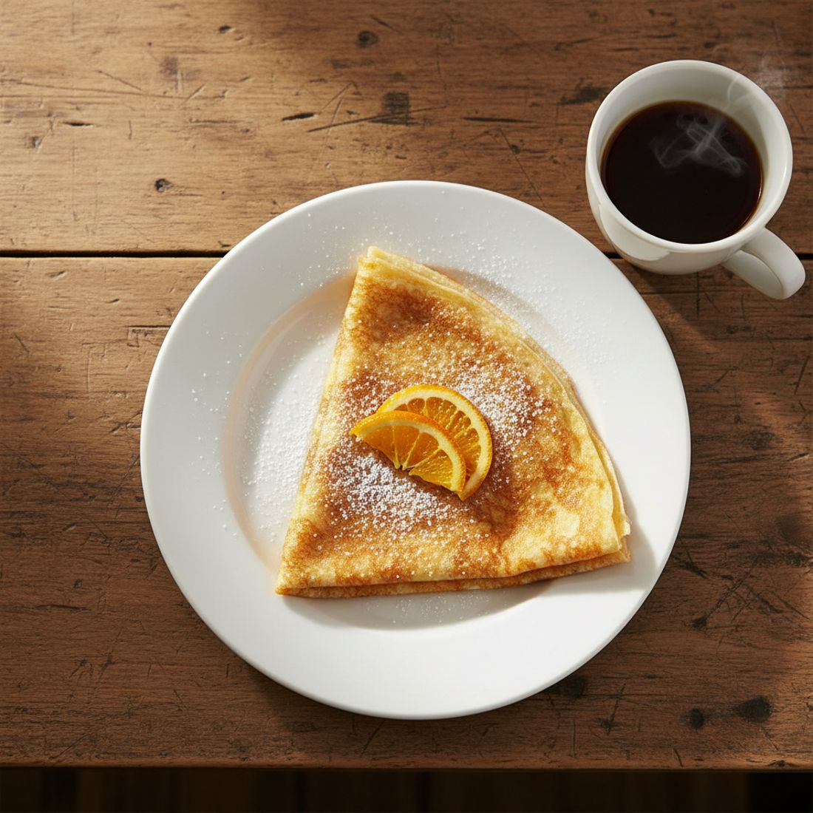
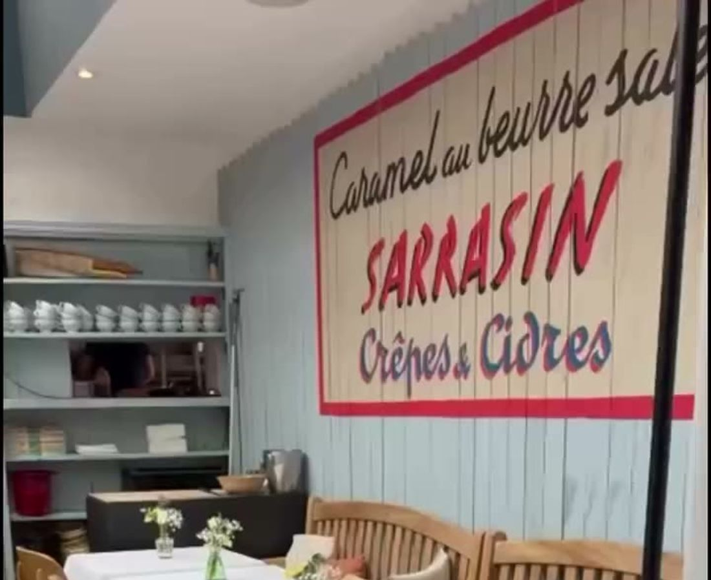
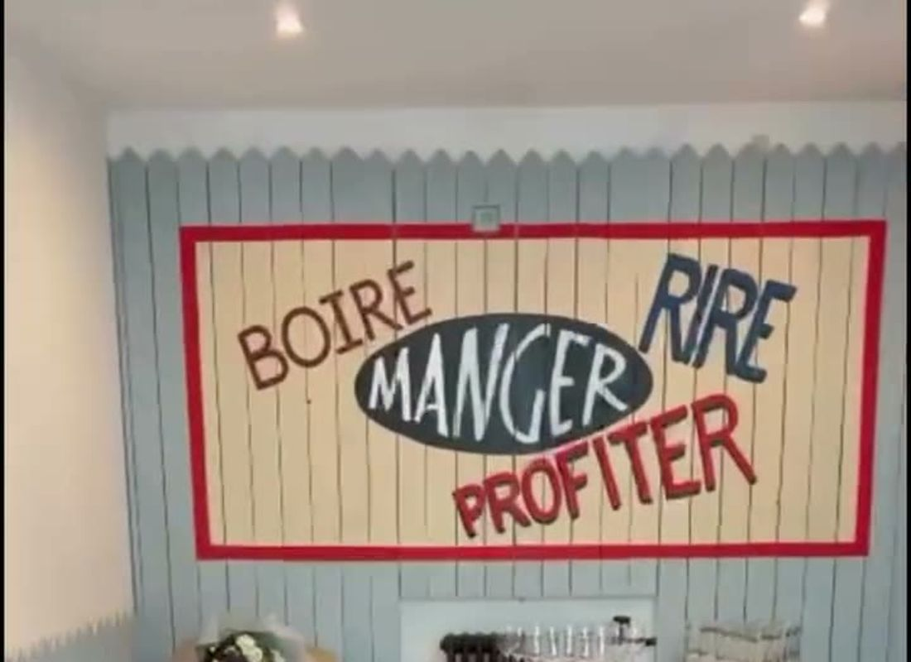
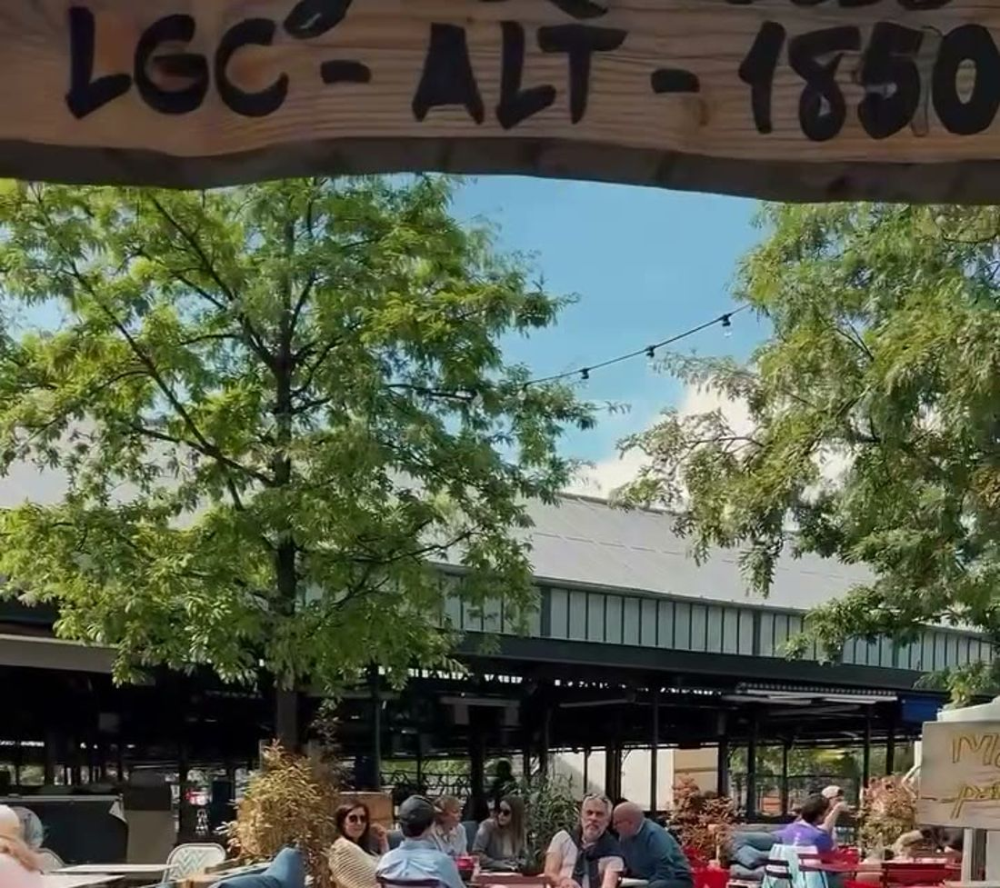
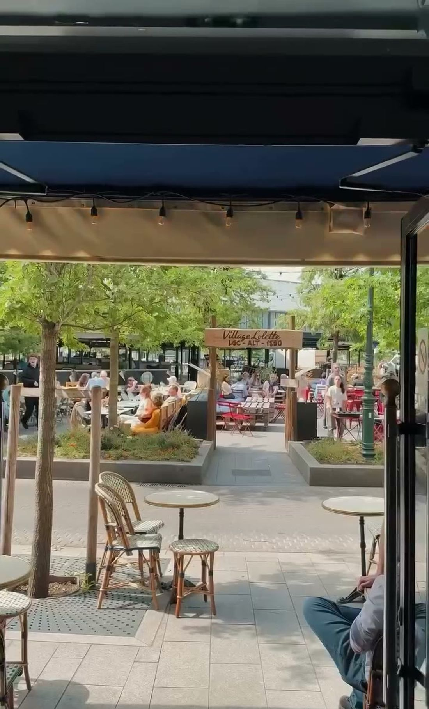

Crêpes, galettes de sarrasin, cidres et café, sur la place de la Liberté à La Garenne-Colombes.
Sur place ou à emporter · Paiement Up accepté


la salle
notre devise
la place
la terrasse92250 La Garenne-Colombes
9h – minuit
tous les jours, 7 jours sur 7